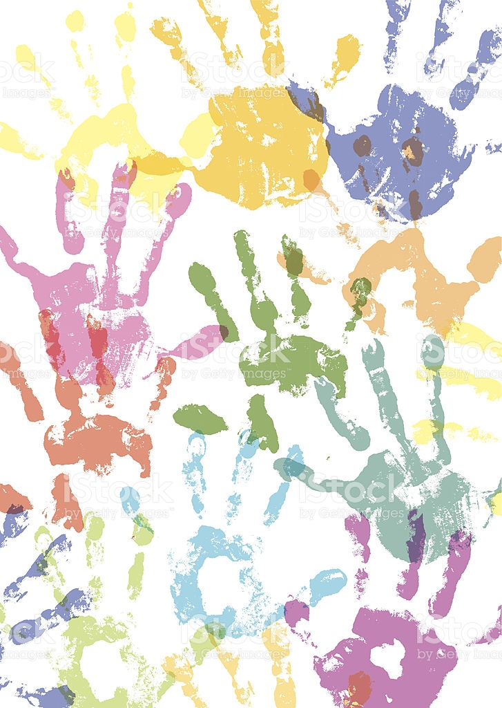

Introduksjon til oppgaven om menneskerettigheter og barnekonvensjonen
Denne oppgaven har jeg valgt å ta med da jeg føler den dekker flere av fagets mål fra emneplanen og at den forhåpentligvis gjenspeiler at jeg har arbeidet mot disse. Oppgaven tar for seg FNs deklarasjon om menneskerettigheter og barnekonvensjonen og hvordan dette kan arbeides med i skolen. Jeg har valgt å ta for meg artikkel 3 i barnekonvensjonen; Barnets beste. Norsk innvandringspolitikk har blitt kritisert for å bryte denne artikkelen, og jeg synes det er viktig at Norge tar kritikken alvorlig dersom vi ønsker å opprettholde status som et land som utfyller sine internasjonale forpliktelser og ivaretar prinsippene om likeverd og menneskeverd. Jeg har forsøkt å se nærmere på hvordan saken kan brukes til å bevisstgjøre barn om sine rettigheter.
Jeg håper oppgaven viser at jeg kan drøfte verdier og holdninger som er viktig for menneskerettighetene og demokratisk medborgerskap, og at det kommer frem at jeg er opptatt av at læringsmiljøet skal fremme elevenes demokratiske utvikling. Gjennom dialog med elever om kontroversielle spørsmål mener jeg at læreren kan modellere og bidra til å utvikle demokratiske ideal og prinsipper i klasserommet.
Som fremtidig lærer er jeg selvfølgelig opptatt av at barnas beste alltid skal ligge som rettesnor for alle saker som angår barn. Jeg ønsker å bli en lærer som både har kjennskap til, kan utøve, videreformidle, og beskytte barns rettigheter. Debatten rundt hvorvidt Norge bryter Barnekonvensjonen opptar meg i stor grad, ikke bare fordi jeg mener at disse barna blir gjort urett, men også fordi jeg ser at saken har en viktig plass i skolen. De fleste lærere vil møte barn som har opplevd traumatiske hendelser og har måtte flykte fra landet sitt. Mange av disse barna lever i en hverdag preget av det de har opplevd og usikkerhet rundt hva som skal skje i fremtiden. Jeg mener også at det er viktig å snakke med barn om alvorlige tema og ta deres meninger og tanker rundt disse på alvor. Gjennom dialog i fellesskap kan barna utvikle større forståelse for hverandre og verden rundt seg.
Å bruke saken om tvangsutsendelser som utgangspunkt for samtale dekker også flere av kompetansemålene for 7.trinn i samfunnsfag. Blant annet kan elevene gjennom en slik samtale i klassen få et innblikk i hvorfor noen må flykte og hvordan det kan oppleves å komme til et nytt land som flyktning. Det kan også være aktuelt å snakke om Norges rolle i- og forpliktelser til FN, og se nærmere på hvorfor FN ble dannet og drøfte viktigheten av dette i dagens samfunn.
Vurderingskriterier:
Oppgavebeskrivelsen sier at oppgaven skal inneholde:
- Tilblivelse og generelt innhold i FNs erklæring om menneskerettigheter/ FNs konvensjon om barns rettigheter
- Presentere en rettighet som er særlig aktuell i norsk debatt og begrunne valget
- Drøfte arbeid med denne rettigheten på et valg klassetrinn
Kriterier fra lærer:
- Sammenheng mellom valgt fokus og læringsutbytter i emneplan
- Vise evne til pedagogisk begrunnelse og kritisk refleksjon
- Referanser i apa stil.
Les oppgaven her.